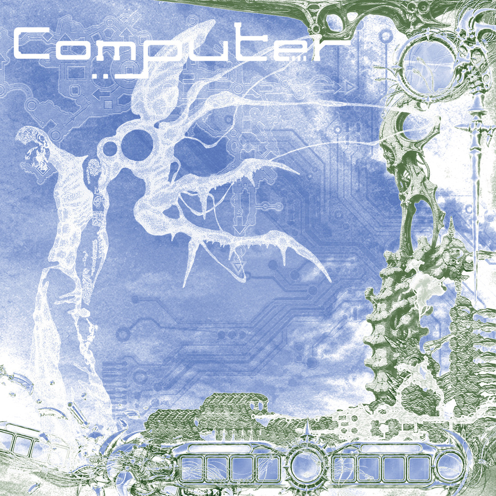
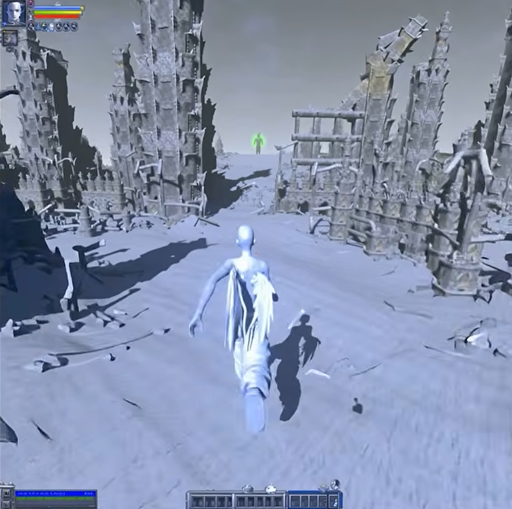
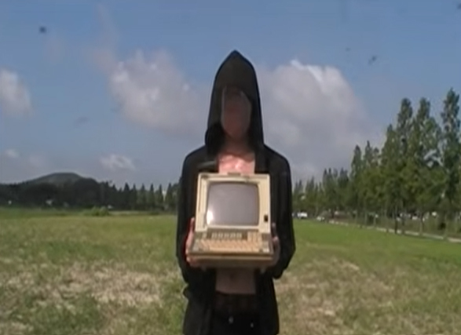
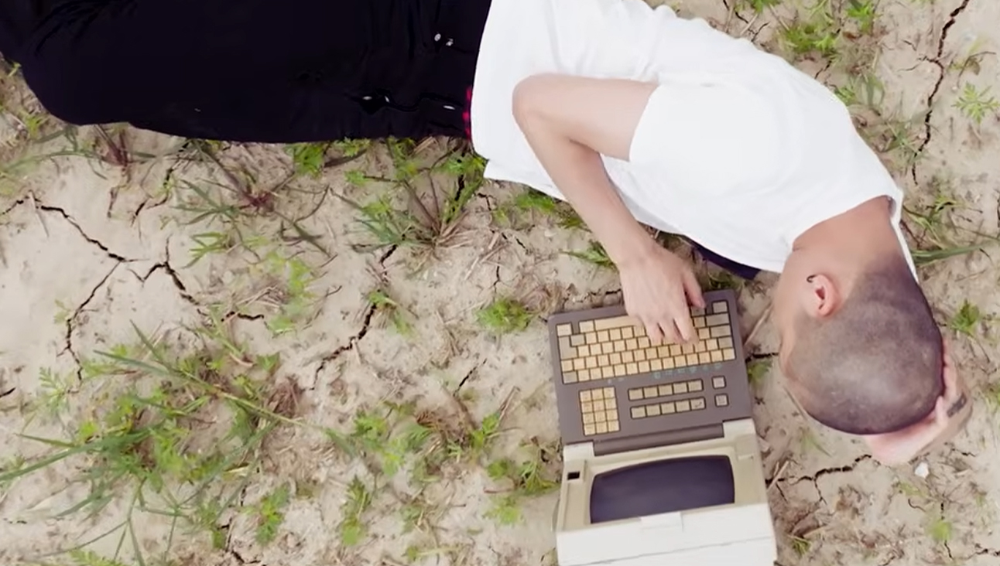
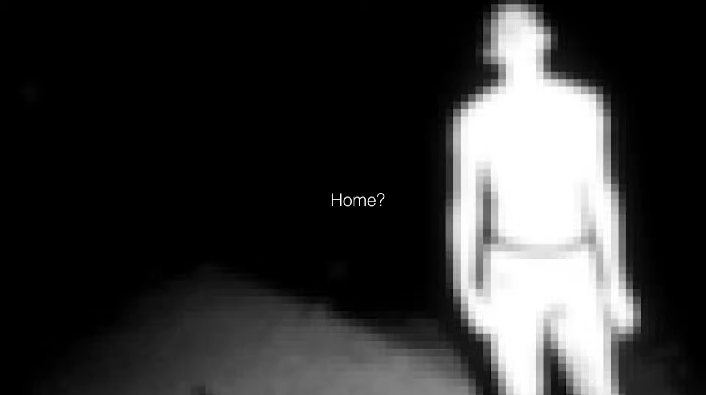
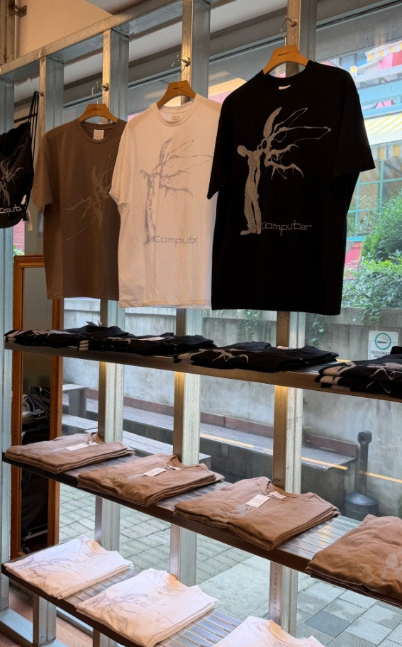

안녕하세요 메이슨홈 님! HAUS OF MATTERS 인터뷰에 참여해주셔서 감사합니다. 간단한 자기소개 부탁드리겠습니다.
POV, 오카시의 메이슨홈입니다. 반갑습니다!
반갑습니다! POV에 합류한 이후 오카시부터 개인 활동까지 굉장히 왕성한 행보를 보여주고 계신데요. 새로운 환경에서 활동하고 계시는 소감이 궁금합니다.
일단 굉장히 바쁘고요. 그런데 항상 바쁜 걸 원했기 때문에 회사에 무한한 감사를 드리고 있어요. 그냥 ‘방송 나오길 참 잘했다’는 생각도 해요(웃음). 지금까지 미디어 노출을 배척한 건 아니지만 왜 그렇게 소극적이었는지 모를 정도로 지금 행복합니다.
요즘에는 밖에 나가면 알아보는 분들도 많아지지 않았나요?
사실 제가 평소에는 그냥 안경 쓰고 수염 안 깎고 거의 일반인들과 동기화돼서 다니기 때문에 잘 몰라보시는 것 같아요(웃음). 그런데 멤버들이랑 같이 다니면 알아봐요. ‘제프리 화이트! 라프산두! 메이슨홈!’ 이렇게 되는 느낌이에요.
일상에서는 어떻게 지내고 계신가요?
일단 앨범 시즌이었기 때문에 거의 집, 운동, 밥, 작업실. 이 네 개의 패턴으로 지냈어요. 요즘에는 앨범을 내고 나서 잡혀 있는 콘텐츠들을 열심히 하고 있고요. 그리고 이 앨범의 곡들을 가지고 다음 공연 때 어떻게 하면 멋있게 보여줄 수 있을지 고민하고 있습니다.
예전과 비교하면 실제로 음악을 만들거나 활동하는 환경에도 많은 변화가 있었을 것 같아요. 이전과 비교했을 때 가장 크게 체감하고 있는 변화는 무엇인가요?
일단 앨범을 만들 때 공연을 생각하면서 만드는 게 제일 큰 것 같아요. 예전에는 공연이 많이 잡히지 않다 보니까 공연의 중요성을 크게 느끼지 못했는데, 요즘에는 공연이 많아지면서 공연할 때 재밌으면서 동시에 내가 좋아하는 노래를 만들어보려는 생각을 많이 해요. 그리고 앨범이나 곡 자체의 완성도도 많이 생각하게 된 것 같아요. 어쨌든 이제 이름이 어느 정도 알려지다 보니까 평가의 단두대에 오르기 싫어도 오를 수밖에 없잖아요.
아무래도 보는 눈이 많아졌죠(웃음). 공연을 염두에 두고 곡을 만든다고 말씀하셨는데, 무대에서 보여주기 위한 곡은 이전의 곡들과 사운드나 작법적인 측면에서 어떤 차이가 있을까요?
일단 쉽게 만들려고 하고, 한국 사람들이 생각보다 멜로디컬한 걸 되게 좋아한다고 느꼈어요. 그 부분에는 저도 장점이 있다고 생각하기 때문에 멜로디를 좀 더 캐치하게 짜려고 노력하는 것 같아요. 아직 입에 잘 붙지는 않지만 한글 가사도 많이 써보려고 하고요.
평소 가사를 쓰실 때는 그래도 한글보다 영어로 쓰는 게 더 편하신가 봐요.
쓰는 것 자체는 당연히 한글이 더 편하지만 아무래도 제가 음악을 들으면서 자주 접해온 언어가 영어다 보니까 실제로 뱉거나 녹음된 결과물을 들었을 때 만족스러운 건 영어 가사인 것 같아요. 저한테는 좀 더 자연스럽고 덜 딱딱하게 느껴지거든요. 대신 영어 가사가 많이 나오다가 중간에 한글 가사가 캐치하게 들어가는 때가 재밌긴 해요.
그렇다면 이번 앨범에서도 가사를 쓸 때 그런 부분을 많이 신경 쓰셨을 것 같네요.
저는 사람들이 음악을 오래 듣게 하려면 위트가 무조건 필요하다고 생각하거든요. 음악이 너무 진지해도 오래 듣기 힘들고, 반대로 너무 웃기기만 해도 오래 듣기 힘든 것 같아요.

그러한 연구를 가미해 만든 작품이 두 번째 정규앨범 [COMPUTER]입니다. 어떤 작품인지 간단하게 소개 부탁드릴게요.
요즘 음악을 두고 ‘인터넷 에라’라고 하잖아요. 그런데 저는 사실 인터넷 에라의 나이대는 아니거든요. 그럼 나는 무슨 에라지? 생각해봤을 때 ‘컴퓨터 에라’라고 생각했어요. 저희가 초/중학교에 다닐 때 컴퓨터 보급이 본격적으로 시작됐고, 저는 원래 음악에 노스탤지어를 넣는 걸 좋아해서 이번 앨범에도 그런 향수가 있었으면 좋겠다고 생각했어요. 그래서 사운드도 그렇게 느껴지도록 만들었고요. 작곡할 때도 Serum에서 기본 파형만 사용했거든요. 그게 약간 8비트 게임에 나오는 음악처럼 들리기도 해요. 그래서 딱 들었을 때 신나고 재밌으면서도, 뭔지 모를 향수가 느껴지는 음악을 만들려고 했습니다. 일단 처음 들었을 때 무조건 꽂히는 음악이었으면 좋겠다는 생각으로 만든 게 제일 커요.
첫 정규앨범 [The Nostalgia With My Little Ecstasy] 역시 자신의 향수를 되짚어가는 작품이었잖아요. 이 향수가 메이슨홈 님이 매번 부각하고 싶으셨던 중요한 키워드였나요?
음악을 들을 때 가슴이 저릿저릿해지는 음악을 좋아하거든요. 옛날 일본의 시부야케이 음악이나 일본 밴드, 한국 모던 록 같은 걸 들으면 가슴이 저릿저릿한데, 그 감정을 전달하는 음악이 장르와는 크게 상관없이 음악의 소스로부터 비롯되는 것 같아요. 그래서 가사는 힙합적인 작법으로 쓰되, 사운드적인 요소에는 약간 과거의 느낌이 깃들어 있는 것을 사용하고 싶었습니다.

그런 말씀을 들으니 커버 아트 역시 ‘컴퓨터 세대’의 감각을 떠올리게 하는 방식으로 작업하신 것 같아요. 이미지를 그림판으로 덧대어 만든 듯한 느낌도 있고. 폰트 역시 2000년대 초중반에 많이 사용되던 디자인을 연상시키잖아요. 이러한 비주얼 콘셉트는 어떤 아이디어에서 출발했나요?
원래는 회색을 많이 사용했는데 막상 보니까 가슴이 저릿하지 않더라고요(웃음). 전자적이고 기계적인 부품들을 UI로 많이 넣었지만, 컬러는 초록색이나 하늘색처럼 현실에서 볼 수 있는 색깔로 재구성해서 굉장히 퓨어한 느낌으로 만들었습니다. 나아가 앨범의 음악과 별개로 보여지는 비주얼은 게임에서 차용을 많이 했어요. 제가 많이 했던 온라인 게임보다는 <파이널 판타지> 시리즈나 <페르소나> 시리즈 같은 콘솔 게임들에서 아이디어를 많이 얻은 것 같아요.
게임을 좋아하시나 봐요.
게임을 직접 하는 건 그렇게까지 즐기지는 않는데, 유튜브에서 게임 실황 보는 걸 좋아해요. 제가 직접 하면 답답해서 못하겠는데(웃음), 게임 잘하시는 분들이 하면 스토리도 팍팍 깨면서 설명까지 해주시니까 이해가 쏙쏙 되거든요. 그래서 직접 하는 것보다는 보는 걸 좋아합니다.
이야기를 듣다 보니 [COMPUTER]가 어떤 분위기에서 만들어졌는지 조금씩 이해되는 것 같아요. 앨범을 들어보면 매 순간 느꼈던 감정을 즉각적으로 쏟아냈다는 인상을 받았는데 감정을 표현하는 방식에서도 전작과 차이가 있었던 것 같아요.
일단 앨범 전곡의 가사를 미리 쓰지 않고 펀치-인 방식으로 작업했어요. 저는 이상하게 가사를 미리 쓰면 좀 징그럽게 나오더라고요. 날것의 표현을 예쁘게 포장한다든지, 그런 적이 없는데 있었던 것처럼 쓴다든지(웃음). 그래서 그냥 비트를 듣고 마이크를 켠 다음, 녹음 버튼을 누르자마자 제 머릿속에 있는 단어들을 막 뱉었어요. 그러다 보니까 거짓 없이, 꾸미는 것 없이 나오는 느낌이 있더라고요. 그래서 앨범 전체적인 그림을 보면 하나의 주제가 계속 이어지는 건 아니에요.
그렇다면 이번 앨범의 가사는 대부분 퓨어 펀치-인 방식으로 만들어진 건가요?
그런 셈이죠(웃음).
그러면 [COMPUTER]는 사운드 측면으로는 향수를 느낄 수 있지만, 가사로는 작업 당시의 개인적인 감정과 생각을 즉각적으로 담아낸 셈이네요.
사운드적인 부분과 별개로 가사만 놓고 보면 최근 한 달 동안의 저를 담은 느낌이에요. 옛날의 특정한 이야기를 끄집어낸다든지, 미래에 대한 이야기를 펼치기보다는, 앨범을 만들던 한 달 동안의 저를 가사에 넣었어요. 그날 일어나서 들었던 생각을 녹음하고, 다음 날 작업실에 오면 또 그날 든 생각을 녹음하는 식이었어요. 그래서 각 트랙 가사들 주제도 약간의 차이는 있겠지만 대부분 비슷비슷해요.
그럼에도 말씀하신 가슴이 저릿한 느낌을 표현하고 싶었기 때문에 사운드에서는 과거의 향수를 융합하신 거고요.
방금 한 달 동안의 자신을 담은 작품이라고 말씀하셨는데, 실질적인 작업 기간은 어느 정도였나요?
일단 [MAINSTREAM]이 5월에 나왔고, 한 달 정도 공연이나 이런 활동을 했으니.. 앨범을 본격적으로 만들기 시작한 때가 6월 즈음이었던 것 같아요. 그리고 8월부터는 후반 작업을 했어야 해서 실질적인 작업 기간은 한 달에서 한 달 반 정도였던 것 같네요.
생각보다 굉장히 짧은 기간에 만들어진 작품이네요. 오카시 앨범이나 다른 분들의 작품과 비교하면 어떤가요?
저희는 항상 두세 달을 넘기지 않았던 것 같아요. 저희가 좀 이상한 게, 물론 다들 그럴 수도 있지만 취향이 하루마다 바뀐다는 느낌이 들더라고요(웃음). 오늘은 A라는 아티스트가 좋았다가 다음 날에는 또 다른 B라는 아티스트가 좋아지고 그래요. 그러다 보니까 저희끼리 음악을 만들어놓고도 몇 달이 지나면 만족이 안 되는 느낌이 있어요. 그래서 그 음악에 대한 만족감이 남아 있을 때 빨리 내버리자는 생각이 커요.
꽂혀 있을 때 바로 내는 거네요.
어떻게 보면 지금 한창 하입을 받고 있는 오카시의 대외적인 상황도 어느 정도 고려한 셈이고요.
방송에 기껏 나왔는데도 앨범을 내지 않아서 잊히는 아티스트들이 많다고 느꼈거든요. 사실 저희는 팀이다 보니까 되게 개꿀인 점이 하나 있어요. [MAINSTREAM] 나온 이후에 매튜가 아크하입의 웬즈데이랑 [PURITY] 내고, 라프산두 앨범 나온 다음에 제 앨범 나오고, 다음에 제프리 화이트 앨범 나오면 대중들이 받아들이기에는 오카시는 한 달에 하나씩 앨범을 내네?가 되는 거잖아요(웃음).
사실 저희는 각자 개인 앨범을 하나씩 내는 거라 큰 어려움은 없지만, 대중들이 보기에는 ‘오카시 열심히 한다!’는 이미지가 생기니까 이렇게 된 거 그냥 한 달에 하나씩 앨범 내서 이미지를 먹어놓자는 느낌이었던 것 같습니다. 그래서 일부러 스케줄링을 한 달 단위로 한 것도 있고요. 공연할 때도 좀 수월해져요. 각자의 개인 앨범 발매 텀이 짧으면 짧을수록 공연에서 할 수 있는 개인곡의 분량도 많아지니까요.
근데 이미지도 이미지지만 어쨌든 앨범을 내기로 했으니까 이때쯤을 목표로 했던 건 맞아요. 다만 방송이 아니었다면 조금 딜레이됐을 수도 있을 것 같아요. 완성도적인 측면도 더 고려했을 것 같고 굳이 빨리 내야 할 이유도 없었을 테니까요. 그런데 이번에는 방송도 나왔고 대중들에게 계속 저희를 각인시켜야 하기 때문에.

앨범 자체는 상당히 즉흥적으로 만들어졌다는 인상이 강한데, 트랙리스트를 보면 곡 제목만으로도 어느 정도 흐름이 느껴져요. 컴퓨터를 켜는 순간부터 끄는 순간까지 이어지는 기본적인 골조가 있잖아요. 이러한 틀은 앨범을 작업하기 전에 구상해두셨나요?
저는 항상 아이디어를 메모해놔요. 앨범을 만들기 위해 메모하는 게 아니라, 그냥 작업하면서도 생각나는 게 있으면 메모해두고 평소에도 계속 뭔갈 적어놔요. 그러다가 앨범을 만들 때 그걸 종합해서 확실하게 정리하는 것 같습니다.
그렇다면 수많은 메모 가운데 이번 [COMPUTER]의 중심이 됐던 대표적인 아이디어가 하나 있다면 무엇이었나요?
일단 ‘COMPUTER’라는 타이틀 자체를 메모해뒀고요(웃음). 전작처럼 제목을 긴 문장으로 풀어볼까 생각하기도 했는데, 이번에는 사람들이 봤을 때 바로 머리에 들어오는 단어 하나로 하고 싶었어요. 그래서 COMPUTER를 메모한 다음에 "Start"와 "End"로 앨범의 시작과 끝을 마무리해야겠다는 것도 적어놨어요.
그리고 곡 자체의 길이를 짧게, 최대 2분대 안으로 가져가자는 것도 적어놨어요. 요즘 저도 어떤 아티스트의 앨범을 들을 때 벌스나 훅이 다 끝나고 뒤에 비트만 8마디 정도 나오면 안 듣고 그냥 다음 곡으로 넘기더라고요. 나도 이러는데 다른 사람들은 어떨까 생각한거죠(웃음). 요즘 다들 참을성이 없고 빨리빨리 풍조가 더 심해진 세상인데, 굳이 곡 길이가 길어서 좋을 게 없겠다는 생각이 든거죠. 심지어 공연을 하면서도 이걸 느껴요.
심지어 개별 곡 안에서도 트랜지션이 굉장히 빈번하게 일어나잖아요.
완전 100% 요즘의 상황을 고려해서 만들었죠. 나도 아웃트로 안 듣는데 사람들이라고 듣겠나? 그러면 아웃트로를 들을 명분을 만들어줘야겠다 싶어서(웃음).
프로덕숀 측면으로도 전작과 차이가 큰 것 같아요. 신스는 굉장히 뾰족하고 베이스는 뭉툭한데, 청각적으로 자극적인 요소들을 굉장히 많이 집어넣은 거잖아요. 사운드의 질감 역시 앞서 말씀하신 부분들을 고려해서 만들어진 건가요?
저 원래 하이퍼팝 되게 싫어했거든요. 레이지이긴 하지만 멜로딕한 레이지-플럭앤비 계열 사운드 많이 만들잖아요. 처음에는 그걸 되게 안 좋아했어요. 믹스를 왜 이렇게 하지? 라고 생각했는데 어느 순간 착 감겼고 다른 평이한 음악에는 느낌이 안 오는 거예요(웃음). 그래서 그냥 제가 공연할 때 신나고, 들을 때 재밌으려고 일부러 그렇게 평이하지 않게 사운드 디자인을 했어요.
앨범의 믹스, 마스터링도 매튜 님과 함께하셨잖아요. 작업하면서도 앞서 말씀하신 것처럼 날것의 질감이 느껴지도록 의도적으로 소리를 뭉개거나 과장하신 건가요?
그래서 매튜한테 음악 던지고 장난감처럼 갖고 놀아보라고 주문했어요. 엔지니어는 원래 소리를 정리하는 직업이잖아요. 근데 그런거 생각하지 말고 부수거나 뭉개고 싶은 만큼 마음껏 해보라 했죠.
이런 사운드에 꽂히신 건 언제부터였나요?
한 두 달 된 것 같아요.
그렇다면 타이밍에 따라서는 [COMPUTER]가 지금과 전혀 다른 사운드의 앨범이 될 수도 있었겠네요.
그렇죠. 만약 제가 이런 음악에 감기지 않았다면 이번 앨범의 아이디어를 폐기하고 다른 걸 하지 않았을까 싶어요. 다만 힙합적인 문법을 사용할 거라면 이 사운드가 컴퓨터라는 컨셉과 제일 잘 맞지 않나 생각합니다.
예전에 다른 인터뷰에서 ‘힙합에 대한 욕구는 오카시 활동을 통해 풀고, 개인적으로는 록과 전자음악을 굉장히 좋아한다’고 말씀하신 걸 봤거든요. 그래서인지 이번 앨범에는 그러한 취향이 많이 반영된 것 같아요. [COMPUTER]를 만들면서 직접적으로 영감을 받은 뮤지션이나 사운드, 장르가 있었나요?
slayr 당연히 많이 들었고, Lucy Bedroque도 엄청 들었던 것 같아요. 그냥 이름 모를 아티스트가 엄청 많아요. 유튜브 틀어놓고 앨범 커버가 예쁘다든가, 이름이 특이하다든가 싶으면 들어보고, 좋으면 연관된 음악을 찾아 듣고. 하나하나 다 기억나지는 않지만 음악을 진짜 많이 들었던 것 같아요. 한 곡을 만들고 나면 그 외 시간에는 비슷한 음악을 하는 아티스트들의 음악을 계속 들었어요. 그리고 다음 날 작업실에 와서 음악을 하지 않는 동안 축적해놓은 데이터를 바탕으로 비트를 찾고, 비트를 찍고, 녹음하는 식으로 작업했습니다.
반대로 영향을 너무 많이 받을까 봐 작업할 때 일부러 다른 음악을 듣지 않는 아티스트들도 있잖아요. 굉장히 많은 음악을 들으셨는데 레퍼런스가 너무 직접적으로 드러날 수 있다는 고민은 없었는지 궁금해요.
이건 레퍼런스가 확실해야만 하는 장르라고 생각했어요. 애초에 제가 지금까지 들어오던 음악이 아니었기 때문에 기본적인 지식도 필요하기도 했고요. 그 기본 지식을 쌓아야 하는 시기와 앨범을 만드는 기간이 겹친 거죠. 그래서 약간 벼락치기처럼 전날 공부하고 다음 날 시험 보는 느낌으로 작업했습니다(웃음).
다르게 이야기하면 새롭게 꽂힌 장르의 레퍼런스를 탐구한 앨범이라고도 할 수 있겠네요. 그 속에서 메이슨홈만의 색채를 담기 위해 가장 신경 쓴 부분은 무엇이었나요?
일단 레퍼런스라고 했지만 여러 곡 안에서 이 사운드만의 교집합을 찾는 과정이었던 걸로 생각해주시면 좋을 것 같아요. 100곡을 듣는다고 하면 그 100곡 안에서 공통적으로 일치하는 무언가가 있잖아요. 저는 그게 ‘질감’이라고 생각했거든요. 그걸 찾아나간 셈이죠.
그리고 저는 랩을 스트레이트하게 뱉는 것에는 솔직히 크게 관심이 없어요. 좋은 멜로디를 짜는 것에 훨씬 더 큰 관심과 흥미를 느끼는 사람이기 때문에 그 부분을 중점적으로 생각했던 것 같아요. 그러니까 어떤 특정한 비트를 듣고 이걸 앨범에 넣어야겠다고 생각하는 사람도 많이 없을 것 같은데, 여기에 이런 멜로디를 짜는 사람은 더 없을 것 같다고 생각한거죠. 그게 제 아이덴티티 아니었나 싶어요.
이제 본격적으로 앨범의 내용에 대해 이야기해볼게요. "Start"를 지나 "Like This"는 일종의 자기소개처럼 느껴지는데 그 태도가 굉장히 공격적이에요. 앞서 [COMPUTER]는 한 달 동안의 자신의 생각을 담은 앨범이라고 말씀하셨는데, 앨범을 만들 당시 가장 중심에 있었던 감정은 무엇이었나요?
좀 재수 없는 소리지만(웃음) 일단 오카시가 하는 음악도 그렇고, 우리 방향성도 그렇고 독보적이라고 생각하거든요. 너네는 이런 거 못 하잖아. 우리처럼 한번 해봐라- 같은 느낌? 전에는 내가 오카시 안에서, 씬에서 보여줄 수 있는 부분이 무엇인지 고민했던 적이 있는데 작업을 하면 할수록 어? 이거 나 아니면 못하는거 아닌가? 하는 생각이 들더라고요(웃음).
‘너희도 나처럼 한번 해보든가. 할 수 있으면 해봐.’ 같은 태도네요.
한번 해보든지. 해보고 좋으면 동료가 되는 거고, 못해서 열등감이 생기면 적이 되는 거고. 그리고 비트가 되게 예쁘잖아요. 저는 항상 약간 어긋난 매칭을 되게 좋아하거든요. 신나는 노래에 슬픈 가사, 예쁜 사운드에 강렬한 가사. 그런 대비를 생각하면서 만들었던 것 같아요.
자신의 음악에 대한 자부심을 이야기하는 곡인데, 로꼬 님이 함께해주셨어요.
저는 로꼬 형이 되게 독보적인 이미지를 가진 사람이라고 생각해요. 가사를 쓰면서 이 곡에 피처링을 받는다면 진짜 독보적인 사람이어야 하지 않을까? 생각한거죠. 제목은 "Like This"인데 별로 ‘Like This’ 같지 않은 사람이 피처링했다는 생각이 들면 안되잖아요(웃음). 그래서 씬에서 제일 독보적인 인물 중 한 명을 피처링으로 넣으면 좋겠다고 생각했는데, 마침 <쇼미더머니> 때 같은 팀이기도 한 로꼬 형이 생각난거죠. 형도 딱 곡의 주제에 맞게 가사를 써주신 것 같아요.
도입부를 여는 곡으로도 굉장히 잘 어울렸다고 생각해요. 가사를 보면 음악에 대한 자부심뿐만 아니라 패션에 대한 자부심도 드러나고요. 그러고보니 앨범에 아예 "Isabel Marant" 트랙도 있잖아요. 평소 패션에도 관심이 많으신데, 뮤지션으로서 ‘들려주는 것’인 음악과 ‘보여주는 것’인 패션은 어떤 관계를 맺고 있다고 생각하시나요?
저는 항상 음악과 사람들에게 보여주는 외형이 같이 가야 한다고 생각하는 사람입니다. 음악을 만들 때도 눈앞에 그려지는 음악이면 좋겠다고 생각하면서 만들어요. 동시에 제 음악을 처음 들어보고 관심이 생긴 분이 저를 찾아봤을 때, 보여지는 모습 역시 그 음악과 일치해야 한다고 생각하거든요. 제 음악의 컬러는 굉장히 다양한데, 저는 제 음악이 약간 ‘스키니하다’고 생각해요. 이게 맞는 표현인지는 모르겠는데(웃음) 아무튼 뾰족하고 날카로운 음악이라고 생각하거든요. 플로우라든지, 톤이라든지, 가사를 쓰는 방식이라든지.
다들 펑퍼짐한 옷을 입을 때 일부러 몸의 쉐입이 좀 더 보이는 옷을 입는다든지, 다른 멤버들한테 얘기한 건 아니지만 오카시 공연을 할 때도 이 사람들 오늘 무조건 검은색 같은 거 입고 오겠다 싶으면 일부러 색감 강한 옷을 입고 가기도 해요(웃음). 보여지는 부분과 음악이 일치하는 게 제 아티스트 활동에 있어서도 좋지 않을까 싶거든요.
음악이나 공연에 따라 스타일은 달라지겠지만, 메이슨홈 님이 공연이나 외부 활동에서 보여주는 이미지 가운데 ‘이것만큼은 반드시 가져간다’고 생각하는 부분도 있을까요?
저는 태어나기를 이렇게 태어나서(웃음)... 가끔은 제프리 형처럼 되고 싶기도 하거든요. 파워풀하거나 누군가를 위협하는 가사를 쓸 때, 이 형은 진짜 덩치도 크고 누가 봐도 위협스러우니까 설득력이 있잖아요. 이 인간 앞에 서면 좀 무섭거든요(웃음). 저는 그런 느낌이 전혀 살지 않으니까 그런 느낌을 가져가고 싶은 마음이 있다가도 이건 내가 가진 탤런트가 아니라고 생각하죠. 그렇기 때문에 저는 스스로에게 좀 더 시라소니 같은 느낌을 줘야 한다고 생각해요. 팀 안에서 뒤에서 슬쩍 칼 한 번 찌르고 도망가는 것 같은, 약간 야비한 느낌이 있어요. 행동대장이라기보다는 패싸움이 났을 때 욕 한마디 하고 ‘이제 네가 싸워’ 하고 바톤 터치하는 느낌(웃음).
게임의 클래스로 비유한다면 약간 도적 같은 느낌이네요.
약간 도적이나 암살자 같은 느낌을 항상 내고 싶어요(웃음).
그런 영향인지 이번 앨범의 사운드가 굉장히 뾰족하다고 느꼈어요. 이어지는 "Breather"에서는 제목 그대로 잠시 숨을 고르게 되잖아요. 비교적 앨범의 초반부에 쉬어가는 구간이 배치되었네요.
그 트랙 이후부터 본격적으로 달리는 느낌이 있거든요. 원래는 이전 곡과 트랜지션으로 이어놓은 부분이었는데, 이것 자체로도 좋은 곡인 것 같다는 생각이 들어서 개별 트랙으로 뺐어요. 원래는 신스만 들어 있었는데 좀 더 행진하는 느낌의 드럼을 사용했어요. 그리고 다음 곡이 "Higher than the sun"이다 보니까 무언가에 도전하는 느낌의 사운드라고 생각했거든요. 그 곡이 나오기 전에 약간의 준비 과정이 있으면 어떨까 하는 느낌으로 배치했습니다.
말씀하신 것처럼 다음 트랙이 바로 "Higher than the sun"인데요. 가사를 보면 굉장히 공격적이에요. 구체적으로 누군가의 이름을 드랍하지는 않지만, 특정 누군가를 겨냥해 공격하는 듯한 인상도 받았어요. 이러한 이야기를 이번 앨범에 남기고 싶었던 이유가 있었나요?
일단 저희는 항상 음악에서 센 이야기를 많이 했거든요. 그런데 방송에 나오고 여러 콘텐츠를 하면서 저희 이미지가 조금 착해진 것 같다는 생각이 들었어요. 뭐, 그게 나쁘다는 건 아니지만 앞으로 이 이미지가 계속 각인되면 내 음악 생활에도 영향을 줄 수 있겠다는 생각이 들었거든요. 우리와 관련한 뉴스나 콘텐츠가 뜨는 걸 계속 보면서 이런 걸로 나를 처음 접한 사람들은 내 음악을 들었을 때 너무 괴리감이 있지 않을까?라는 생각도 든거죠. 그래서 오히려 반발심이 더 생긴 것 같아요. ‘아니, 씨발. 나 원래 이런 거 계속 했었는데.’ 하면서(웃음). "Higher than the sun"에서는 그냥 다 좆까라고 하는 곡을 쓰고 싶었어요.
그런 갈증이 계속 있었어요. 물론 [MAINSTREAM]에서도 이런 모습이 많이 나오긴 했지만, 제 개인곡을 낸다고 했을 때는 생각할 부분이 되게 많았거든요. 그런데 결국 나도 내가 하고 싶은 말을 해야 하는게 맞다는 생각이 들었어요. 좆밥인 새끼는 비비려고 하지 마라. 우리가 방송에 나왔든 어떤 이미지로 보이든, 근본적으로 실력이 있고 음악을 잘하기 때문에 사랑받는 거지 비단 이미지 때문만은 아니다. 좆까. 하면서 쓴 곡인거죠.
답변 시원하네요(웃음). 대외적으로 방송이나 미디어에 출연하기 시작하면 사람들은 자연스럽게 ‘저 사람은 착해야 한다’, ‘올바른 삶을 살아야 한다’는 선입견을 가지기도 하잖아요. 주변에서도 알게 모르게 그러한 모습을 요구했을 것 같은데, 실제로 그런 시선에 영향을 받은 적도 있으셨나요?
당연히 조금은 있었던 것 같아요. 그런데 인간이라면 당연히 예의를 차려야 하는게 맞는 거고, 사회적으로 통용되는 행동을 해야 하는 거잖아요. 우리 음악을 좋아하는 사람들만 보는 게 아니라 불특정 다수가 보는 방송에 나가서 ‘너 좆같아. 꺼져, 병신아.’라고 할 수는 없으니까요(웃음).
하지만 음악에서만큼은 할 말 해야 한다고 생각해요. 그렇다고 제가 방송에 나가서 무조건 기는 모습을 보여준 것도 아니고요. 방송에서는 방송의 틀에 맞는 예의를 차린 거고, 제 음악 안에서는 그 음악을 재단할 사람이 저밖에 없으니까 하고 싶은 이야기를 하는 거라고 생각합니다. 그리고 그렇게까지 파격적인 이야기를 했다고 생각하지도 않고요.

음악과 실제로 보여주는 이미지가 동일시되는 아티스트도 있지만, 한국에서는 아무리 센 음악을 하더라도 사회적으로는 예의 바르고 밝은 모습을 요구받는 경우가 많잖아요. 물론 사회생활에서 지켜야 할 부분은 분명히 있지만, 그 과정에서 아티스트 스스로 음악과 실제 모습 사이의 괴리를 느낄 수도 있을 것 같거든요.
그런데 저는 이런 생각도 있어요. 단편적인 예로 상민이나 홍원이를 실제로 만나면 되게 나이스하거든요. 그렇지 않을 거라고 생각하는 사람들이 많겠지만 실제로는 되게 젠틀하고, 특히 상민이는 굳이 그렇게까지 하지 않아도 되는데 굉장히 예의가 바릅니다. 그런 걸 보면서 음악에서 어떤 이야기를 했다고 해서 사회에서도 똑같이 행동해야 하나?라는 생각을 많이 해봤어요. 저도 괴리를 느꼈던 적은 있지만, 그렇다고 음악에서 이렇게 말했다고 방송에 나가서까지 욕하고 그래야만 자기 음악에 진실된 아티스트인 건 아니라고 생각하거든요.
결국 음악은 개인적인 생각을 담는 거고 일상에서는 그 생각을 표현하지 않을 뿐인 거죠. 사회생활을 하면서 표출하지 못했던 걸 음악이라는 창구에서 다 표출했기 때문에 오히려 사회에서는 더 편하게 행동할 수 있는 게 아닐까 싶어요. 그렇게 생각하면서 괴리감이 사라졌어요.
예전에는 제가 방송에 나가서 예의를 차리는 게 내 음악이랑 안 맞는 건지 고민한 적이 있었어요. 그런데 다른 아티스트들을 보면서 결국 음악에서 자기 이야기를 했기 때문에 떳떳한 거라는 생각이 들더라고요. 사회적 시선을 의식하면서 음악에서도 자기 이야기를 숨겼다면 오히려 더 큰 괴리감이 생겼을 것 같아요. 개인 작품에서 하고 싶은 이야기를 다 했기 때문에 어디가서 어떻게 행동하더라도 부끄럽지 않고 떳떳할 수 있는 거죠.
음악에서 화가 났다고 해서 평소에도 계속 화가 나 있을 이유는 없는 거니까요.
그렇죠. 뭔가 정신적인 상태와도 비슷한 것 같아요. 예를 들어 우울하다고 해서 하루 종일 계속 우울한 건 아니잖아요. 잘 지내다가도 어느 순간 가라앉는 순간이 있고, 다른 감정이 드는 순간도 있는 것처럼요. 그런 느낌인 것 같아요.
"Isabel Marant"에서 ‘내 상처 덮어, in my rack’이라는 가사도 있잖아요. 여기에서 이야기하는 ‘상처’ 역시 앞서 말씀하신 것과 비슷한 종류라고 볼 수 있을까요?
지금까지 오카시가 10년간 겪었던 설움을 이제야 돈을 벌기 시작하면서 보상받는 느낌이에요. 방송 나와서 잘되고 돈 벌어서 그게 내 10년간의 상처를 씻어줬다는 게 아니라 씨발~ 드디어 인정받네~ 같은 느낌인 거죠(웃음). 그런데 인정받았다는 걸 직접적으로 보여주는 메타포가 결국 돈이라고 생각했어요. 공연에 많이 불러주고, 방송에도 많이 나오고, 어떤 브랜드와 화보도 찍으면서 결국 눈에 보이는 건 돈이잖아요. 단순한 머니 스웨그라기보다는 10년간의 설움을 타파했다는 걸 통장에 이 정도 돈이 들어오면서 드디어 내 상처가 치유되는구나! 같은 식으로 표현한 거예요.
힙합적인 문법으로는 ‘돈으로 내 상처를 치료했다’가 되지만, 결국 그 돈도 제 활동에서 나오는 거잖아요. 드디어 인정을 받았다. 드디어 사람들이 우리 음악을 많이 듣기 시작한다. 우리가 어떤 음악을 하는 사람인지 사람들이 알게 됐다는 의미로 쓴 가사라고 생각해주시면 될 것 같아요.
일종의 보상인 거네요.
그렇죠. Isabel Marant가 엄청난 브랜드거든요. 그런데 저희가 거기에 초청받아서 옷도 받고 갔어요. 새로운 시즌 팝업에 초청받아서 갔을 때 와, 이게 되네? Isabel Marant에서 나를 불러? 라는 생각이 들었거든요(웃음). 오케이. 이때의 기억을 쓴다. 나는 이걸 잊지 않겠다, 해서 붙인 제목이이기도 하고요.
그런 맥락에서 이어지는 "Rack"이 이번 앨범의 중심이 되는 타이틀곡이 된 것도 흥미로워요.
일단 가사가 제일 마음에 들었고요. 그리고 제가 원래 앨범이 나오기 전에 다른 사람들에게 음악을 진짜 안 들려줘요. 정말 음악적으로 믿을 수 있는 사람들에게만 들려주는데, 그때 이 곡의 반응이 제일 좋았어요. 매튜이랑 믹스를 할 때도 이 곡이 무조건 타이틀이 돼야 할 것 같다고 했어요. 가사 이전에 그냥 사운드적으로 제일 마음에 들었던 곡이에요.
"Rack"에는 ‘내 눈앞의 네가 예전에 너가 맞는지 당장 확인해야 해’라는 가사도 등장해요. 본래 가사의 맥락과는 조금 다른 질문일 수도 있지만, 오카시와 메이슨홈 님의 인지도가 예년과 비교하면 굉장히 많이 달라졌잖아요. 실제로 주변 사람들이 자신을 대하는 방식이 달라졌다고 느낀 적도 있으셨나요?
저는 애초에 처음 만났는데 쎄하면 그 뒤로 안 만나요(웃음). 좀 그게 버릇처럼 돼 있어요. 제가 클럽에서 2년 동안 일하면서 정말 많은 사람을 만났는데, 딱 봤을 때 ‘이 새끼 쎄하네’ 싶으면 이름도 안 물어보고 그냥 인사만 하고 끝냈거든요. 그러다보니 <쇼미더머니> 나가기 전부터 제 주변에 있던 사람들은 다 안 변할 것 같은 사람들, 통수치지 않을 것 같은 사람들만 남았다고 생각해요. 실제로 그게 맞는 것 같고요. 그래서 그런지 지금까지도 저를 대하는 방식이 별로 안 변했어요. 뭔가 좀 변했으면 좋겠는데??
어떻게 변했으면 좋겠어요?
저를 좀 떠받들어줬으면 좋겠는데(웃음).. 계속 내리깔아요. 그런데 그게 좋아요. 인간은 쉽게 안 바뀌잖아요. 제가 공연을 많이 하고 예전보다 돈을 많이 번다고 해서 주변 사람들이 저를 대하는 방식이 달라지지 않았다는 게, 어떻게 보면 저라는 사람 역시 바뀌지 않았다는 걸 입증해주는 것 같아요. 만약 제가 변했다면 사람들도 저를 대하는 방식이 달라졌을 테죠. 근데 하나도 안 바뀐 걸 보면 그래도 연예인병에 그렇게 크게 걸리지는 않았구나 싶어서 다행이에요(웃음)
지금보다 더 많은 돈을 벌게 되면?
무조건 걸리죠. 무조건 걸리겠죠(웃음). 근데 아직은 그 정도 액수는 아닌가 봐요.
지금은 경제적으로 어느 정도 숨이 트인 정도인가요?
지금은 아예 트였죠. 행복해요.
행복하시다니 정말 다행이네요(웃음).
그래서 "Rack"에도 ‘I can split my racks, homie’ 가사가 있어요. 이제 돈 다 n빵할 수 있다는 의미인데, 옛날에는 오카시끼리 돈 나눈다고 하면 당연히 좋다고 했지만 막상 들어오는 금액 보면 ‘이거밖에 안 들어오네??’였거든요(웃음). 그런데 이제는 제 개인 앨범이든, 오카시 앨범에 들어간 제 개인곡이든, 저 혼자 하는 공연이든 다 나눌 수 있다는 느낌이 실제로 들어서 쓴 가사에요.
오디오고스 님과 함께한 "IRIH"도 재밌습니다. 이 곡에서 보여준 보컬 퍼포먼스가 굉장히 과감하다고 생각했어요. 사실 이번 앨범은 매 트랙마다 보컬 퍼포먼스가 상당히 튀어나온다는 인상을 받았는데요.
일단 나만의 무기를 만들어야 한다고 생각했어요. 저는 오카시 안에서 제 톤이 되게 평범하다고 생각했거든요. 그래서 예전에 Lil Uzi Vert가 했던 방식을 많이 생각했어요. 보컬을 되게 연기하듯이 쓰는? 매 곡마다 자신의 자아를 갈아 끼우는 것처럼. 이런 면모를 한번 갈고 닦아봤고, 어느 정도 완성형이 된 퍼포먼스가 이번 앨범에 많이 실리지 않았나 싶어요.
계속해서 연구해왔던 스타일이 정립된 순간이라고 할 수도 있겠네요.
곡마다 톤을 다르게 가져가면서 제일 잘 어울리는 톤을 찾아 쓰는 거죠. 내가 오카시 활동을 하면서 이 친구들에게도 도움을 주고, 앨범에서 들을 만한 재미 요소를 하나 더 추가하려면 이렇게 하는 게 제일 좋지 않을까? 생각한거죠.
세 분 모두 한 가지 목소리만 계속 사용하는 스타일은 아니잖아요. 곡에 따라 목소리를 갈아 끼우듯 다양한 톤을 사용하는데, 한편에서는 그렇다 보니 ‘OKASHII는 누가 누군지 구분하기 어렵다’는 이야기도 있더라고요. 이러한 반응에 대해서는 어떻게 생각하시나요?
그런 피드백 좀 짜증 나요(웃음). 뭐라고 해야 할까, 자기들이 깊게 안 들어놓고 변명하는 느낌이에요.
저는 우리가 절대 헷갈릴 목소리가 아니라고 생각하거든요. 각자만의 분명한 개성이 있고, 가사를 쓰는 방식도 다 다르고 플로우도 달라요. 오히려 저는 그게 저희의 장점이라고 생각하기 때문에 딱히 동의하지 않아요.
멤버 각자가 굉장히 개성적인 톤을 가지고 있다고 생각합니다(웃음). "IRIH"에서는 오디오고스 님과 함께하셨어요. 이야기를 들어보면 두 분의 인연도 상당히 깊은 것 같은데.
오디오고스와는 오카시에 들어가기 전부터 알던 사이예요. 벌써 10년 정도 됐는데, 오카시 애들이랑도 다 10년 전부터 알았어요. 걔가 미국에서 한국으로 왔을 때 처음으로 작업실을 같이 잡았어요. 걔가 가출했을 때 저도 집을 나온 상황이어서 같이 작업실에서 먹고 지내기도 했고요. 그러다 제가 오카시에 들어갔고, 오디오고스는 다시 미국으로 넘어가서 활동하겠다고 해서 떠났어요. 그 이후로 간간이 연락을 주고받다가 다시 한국에 들어왔고, 이번에 제 앨범 내면서 한번 같이 해본거죠.
두 분의 음악적인 접점이 그동안 많이 드러나지 않았던 만큼 의외의 조합이기도 했어요. 마침 저희도 이번 매거진에서 오디오고스님과 인터뷰를 진행했거든요. 쥬 이안 님과 함께 앨범을 내셔서.
원래 쥬 이안도 "IRIH"에서 함께 하기로 했는데, 앨범 작업하느라 바쁘대서 안 건드리겠다고 했죠(웃음).
그래서 오디오고스 님만 참여하게 된 거군요(웃음). 이번 앨범의 피처링 면면을 보면 굉장히 다채로워요. 앞서 이야기한 로꼬 님부터 제이민님, 그리고 이어지는 "Habits"의 바비님까지 각자 색깔이 뚜렷한 아티스트들이 참여했습니다. 피처링 기용에도 명확한 기준이 있었나요?
무조건 있었고요. "Isabel Marant" 같은 경우에는 고급스러운 이미지가 필요해서 제이민이 정말 제격이라고 생각했어요. 로꼬 형은 아까 이야기했고.. "IRIH"도 한국에서 이런 스타일을 제일 잘 소화할 수 있는 사람이 오디오고스 말고는 없지 않을까 생각했어요. 이 장르에서 보여줄 수 있는 고점이 제일 높은 사람이라고 생각했거든요. 실제로 너무나 잘해줬고요.
바비 형 같은 경우에는 저는 항상 이 형의 벌스를 들으면 카타르시스를 느끼거든요. 저 정도로 파격적인 가사를 쓸 수 있나 싶어요. 아이돌이면서 동시에 결혼도 한 사람이 저렇게까지 센 가사를 쓸 수 있다는 게 저는 정말 힙합이라고 생각한단 말이죠. "Habits"처럼 공격적인 곡에서 가사적인 카타르시스를 주려면 이런 사람이 필요하다고 생각했어요.
그렇게 강렬하게 달려오던 앨범은 "Moment"를 기점으로 분위기가 확 바뀌죠. 특히 이 곡은 노크 소리와 함께 시작되는데요.
처음부터 이 위치에 이 곡을 넣겠다고 생각한 건 아니었어요. 이 곡을 만든 이유가 하나 있는데, 제가 지금 한국에서 제일 잘한다고 생각하는 아티스트가 둘 있는데 그게 디모렉스랑 웬즈데이거든요. 저는 팬의 입장에서 이 둘이 같이하는 곡을 듣고 싶은데 둘이 함께 작업을 할 각이 안 나오는 거예요. 그럼 내가 시켜야겠다 생각해서 만든 트랙이에요(웃음).
그런데 "Habits"랑 이 곡의 분위기가 너무 다르잖아요. 예전부터 여러 음악을 듣다 보면 이런 노크 소리를 활용한 곡이 있는데, 그런 곡을 들으면 저도 진짜 누가 노크한 줄 알고 깜짝깜짝 놀랐거든요(웃음). 그런 느낌을 한번 주고 싶었어요. "Habits"에서 "Moment"로 바로 넘어가면 분위기가 너무 안 맞으니까 노크 소리로 탁 환기시킨 다음 넘어가면 좋지 않을까 싶었죠.
트랜지션을 활용하거나 조금 느린 인터루드를 거칠 수도 있었을 텐데, 노크 소리 하나로 아예 분위기를 바꿔버린다는 점이 흥미로웠죠.
그래야만 설득력이 있다고 생각했어요. 약간 어벤져스의 닥터 스트레인지처럼 엔드게임, 최후의 방안을 찾은 느낌이랄까(웃음).
이야기 측면에서도 일종의 전환점처럼 느껴져요. 이전까지는 ‘내가 짱이야. 너네 다 꺼져.’에 가까웠다면 "Moment"부터는 누군가를 끌어안는 방향으로 바뀌는 것 같거든요.
주제 자체가 확 달라지긴 하죠. 사랑 노래잖아요. 그냥 러브송을 한번 써보고 싶었어요. 진한 러브송.
프로덕션이나 사운드의 감정선은 "Moment"를 기점으로 한층 차분해지는 것 같아요. 이어지는 "Turn Off" 역시 메이슨홈 님의 감정을 정리하는 구간처럼 느껴졌고요. 컴퓨터에 빗대면 "Start"에서 전원을 켰다면 "Turn Off"에서는 전원을 끄는 셈인데.
되게 웃긴 게 "Turn Off"는 이 앨범에서 제일 처음 만든 곡이에요. 원래는 이런 분위기의 곡들로 앨범을 꾸리려고 했는데, 작업하다 보니까 생각이 바뀌었어요. 사실 이런 가사가 지금은 잘 안 나와요. 왜인지 생각해보니까 지금은 평소에 이런 생각을 안하는 거예요. 지금이 너무 편하고 좋고 행복하니까. 그래서 이런 가사는 더 이상 나오지 않겠다는 생각이 들었고 앨범의 주제도 조금 틀었어요.
그래서 앨범의 타임라인을 생각하면서 만든 곡은 아니었지만 완성하고 보니까 사운드적으로도, 가사적으로도 이 지점에 들어가는 게 제일 좋겠다는 생각이 들어서 뒤쪽에 배치했습니다.
"Turn Off"에는 거울을 보며 마주하는 자기 자신에 대한 이야기도 담겨 있잖아요. 앨범 전반적으로 누군가를 향해 이야기하는 가사가 많은데, 그 대상은 트랙마다 달라지는 건가요?
"Turn Off"는 제 자신한테 하는 이야기가 맞아요. 정신적으로 굉장히 힘들었던 시기가 있었거든요. 그때 왠지 모르겠지만 거울을 되게 많이 봤어요. 평행세계처럼 생각했을 때 힘든 나는 이쪽에 있고, 거울 너머에는 아무 문제없이 평화로운 메이슨홈이 있으면 어떨까? 하는 느낌으로 가사를 써본거죠.

이 구간에서는 시간의 흐름도 느껴지죠. "Turn Off"에서는 새벽 4시를 이야기하고, 다음 트랙인 "Home"에서는 해가 뜨면서 집으로 돌아가는 듯한 장면이 그려지잖아요.
두 트랙은 내용이 이어져요. "Turn Off"는 말 그대로 전원을 꺼서 끝내는 거예요. 그게 죽음을 의미할 수도 있고 잠을 의미할 수도 있는데, 다음 "Home"은 이전 트랙에서 힘들어하고 있는 저에게 해주는 이야기 같은 느낌인거죠. 힘들면 아~ 집가고 싶다, 라고 말하는 것처럼 집은 하나의 안식처잖아요. 이 곡에서 집은 성공을 의미할 수도 있고, 돈을 의미할 수도 있고, 진짜 집을 의미할 수도 있어요. 평행세계의 메이슨홈이 존재한다면, "Home"의 메이슨홈이 "Turn Off"의 메이슨홈에게 해주는 이야기라고 생각했어요.
해가 뜨는 것도 마찬가지예요. 예전에는 밤새 작업하고 아침이 돼서 집에 들어갈 때마다 ‘이게 의미가 있나? 내가 이 시간까지 작업하고 지금 집에 들어가는 게 무슨 의미가 있지?’라는 생각도 했거든요. 그런데 ‘아니다. 그건 다 의미가 있는 거고, 결국 너를 성장시키는 밑거름이 될 거다’라고 "Home"의 메이슨홈이 "Turn Off"의 메이슨홈에게 이야기해주는 트랙인 셈이죠.
그렇다면 앨범의 최후반부는 또 다른 ‘나’와 ‘나’가 서로 이야기를 주고받으면서 자신의 감정을 정리하는 방식으로 마무리되는 거네요.
"Home"은 굉장히 희망적인 가사가 맞아요. 그런데 저는 이 두 곡이 아예 단면적인 예를 보여주는 그림 같다고 생각해요. "Turn Off"는 정말 큰일 난 메이슨홈이고, "Home"은 그런 것들을 모두 견디고 지금의 자리에 있는 메이슨홈을 보여주는 느낌인거죠. 그러니까 고꾸라진 세계선의 메이슨홈이 "Turn Off"라면, 결국 일어난 세계선의 메이슨홈은 "Home"인 거죠.
마지막 트랙 "End"로 앨범이 끝납니다. 서사적인 이야기는 사실상 "Home"에서 마무리되고, "End"는 일종의 엔딩 크레딧처럼 느껴졌어요.
1번부터 14번 트랙까지는 굉장히 전자적인 느낌이 강해요. 사람의 손맛이 느껴지지 않고, 기계적인 맛이 느껴지는 음악이라고 생각해요. 그렇기 때문에 마지막에는 반대로 사람의 손맛이 느껴지는 곡을 배치해서 대비를 주고 싶었어요. 유일하게 어쿠스틱 악기가 들어가는 곡이기도 하고요. 드럼도 그렇고 기타도 그렇고 모든 악기가 그리드에 딱 맞지 않아요. BPM은 정해져 있지만 모든 게 맞아떨어지지 않는, 약간 프리 템포 같은 느낌이죠. 이런 느낌만이 이 세계에서 쭉 빠져나오는 해법이 될 것 같았거든요.
저는 친구들이랑 밤새 게임을 하다가 게임을 끈 다음 텅 빈 모니터를 바라보면서 엄청난 공허함을 느낄 때가 있어요. 1번부터 14번 트랙까지를 하나의 게임 속 스토리라고 생각한다면 "End"는 그 모든 스토리를 마무리하고 게임을 꺼버린 상태에서 남는 허무함과 공허함인 거죠.
이번 앨범은 그냥 저한테 있는 감정을 모두 담은 앨범이라고 생각해요. 머니 스웨그도 있고, ‘내가 짱이야’도 있고, 나를 떠난 사람에 대한 이야기도 있고, 제가 정신적으로 힘들었던 시기의 이야기도 담았고, 외로움이나 그리움의 감정도 담겨있죠. 특별히 어떤 하나의 대상을 두고 이야기했다기보다는 제가 느끼는 여러 감정을 포괄적으로 다 담은 것 같아요. 각각의 감정이 정확히 하나로 정의되지는 않지만, 그런 것들이 모인 하나의 집합체에 가까운 것 같습니다.
[COMPUTER]는 자기 자신에 관한 이야기를 컴퓨터를 사용하는 과정에 빗대어 담아낸 작품이라고 느껴졌어요. 동시에 굉장히 시각적인 작품이라는 생각도 들었는데요. 컴퓨터 모니터 자체가 시각에 크게 의존하는 매체이기도 하잖아요. 각각의 곡이나 앨범의 이야기가 영상으로는 어떻게 표현될지 상상하면서 작업하기도 하셨나요?
일단 앨범을 기획할 때부터 영상은 생각하고 있었어요. 28일에 뮤직비디오가 나왔는데, 하나의 영상 안에 5개의 뮤직비디오가 들어가 있거든요. 거기에서는 제가 음악 안에서 보여주지 못한 이야기들을 영상에 조금 더 녹이려고 했어요. 그래서 그런 부분은 어느 정도 염두에 두고 작업했던 것 같습니다.
그렇다면 28일에 공개되는 영상도 그렇고, [COMPUTER]라는 작품을 중심으로 계속해서 무언가를 확장해보고 싶은 욕심도 있으신 건가요?
사실 팝업스토어도 열었고, 뮤직비디오도 나왔으니 거의 끝이긴 해요. 이후에 비하인드 다큐멘터리 같은 것도 나오겠지만요. 그래도 이 세계관만큼은 사람들이 계속 몰입해서 들을 수 있도록 만들고 싶어요. 앞으로 이게 어떻게 이어질지는 모르겠고, 제 다음 행보에 따라서 달라질 것 같아요. 아직 정해진 건 없지만, 어쨌든 [COMPUTER]라는 앨범 자체에 대한 몰입이 깨지지 않게 만들고 싶습니다.
이번 앨범은 메이슨홈 님이 주도적으로 만들고 프로덕션에도 참여하셨지만, 프로듀서 SIM 님과도 함께 작업하셨잖아요. SIM 님은 이번 앨범에 어떤 방식으로 참여했는지, 또 프로듀서로서 어떤 부분에 강점을 가진 아티스트인지 소개해주시면 좋을 것 같아요.
SIM은 일단 힙합 프로듀서가 아니고요. 덥스텝이나 하우스, 테크노를 많이 하는 친구예요. 이번에는 전자적인 사운드를 잘 쓸 수 있는 프로듀서가 필요했어요. 그래서 드럼을 제외한 모든 파트를 SIM에게 맡겼어요. 어쨌든 힙합의 문법으로 앨범을 만들어야 하는데, 저는 힙합에서 제일 중요한 게 드럼이라고 생각하거든요. 그래서 드럼은 제가 찍고 나머지는 전부 SIM에게 맡겼어요. 트랜지션에서도 SIM이 다루는 프로그램에서 사용할 수 있는 여러 효과를 많이 부탁했고요.
어쨌든 앨범의 전체적인 분위기와 사운드는 SIM의 손에서 많이 나온 셈이죠. 물론 제가 주문한 부분도 있지만, 그 주문을 받아들이고 실제로 작곡으로 구현하는 건 또 다른 영역이라고 생각하거든요. 그걸 잘해준 것 같아요.
마침 트랜지션 이야기가 나왔는데요. 앨범을 처음부터 끝까지 들어보면 중간중간 환기되는 지점은 있지만, 기본적으로는 각각의 트랙이 끊김 없이 이어지도록 만들어졌잖아요. 개별 트랙 사이의 트랜지션은 어떤 방식으로 연결하셨나요?
다른 트랜지션도 비슷하겠지만, 이전 곡에 있는 소스를 가져와서 다음 곡에 녹이기도 하고 반대로 다음 곡의 소스를 가져와서 이전 곡에 미리 녹이는 방법도 사용했고요. 그리고 MPE(MIDI Polyphonic Expression)라고, 코드의 각 음을 독립적으로 미끄러트려 다음 코드로 넘어갈 때 그 사이의 미분음을 전부 스치면서 연주하는 방식이 있어요. 여러 음을 동시에 부드럽게 글라이드시키는 걸 한번 써보고 싶었는데 SIM이 딱 할 줄 알더라고요. 그래서 신세 좀 졌습니다(웃음).
그렇다면 작업할 때는 일단 여러 곡을 만들어놓고 그중에서 덜어낼 곡과 가져갈 곡을 정한 뒤 트랙 순서를 배치하는 편인가요? 각 곡 사이의 연결성을 고려하려면 이런 부분도 체크해야 할 것 같은데.
일단 초반 50% 정도는 먼저 만들어봐요. 그다음에 쭉 들어보면서 뱅어가 좀 부족하다 싶으면 뱅어를 추가하고, 트랙 사이를 이어주는 유기적인 곡이 하나 필요하겠다 싶으면 그런 곡을 더 만드는 식으로 작업했어요.
그렇게 필요한 곡을 채운 다음 마지막에 연결하는 방식이군요.
SIM 님과 함께 이번 앨범에서 새로운 사운드에 도전하셨잖아요. 그렇다면 다음 개인 앨범에서 관심을 가지고 있거나 새롭게 도전해보고 싶은 사운드나 장르도 있을까요?
회사에서 진짜 싫어할 것 같은데(웃음), IDM 아니면 슈게이즈를 해보고 싶긴 하거든요. 그런데 이건 진짜 양심상 회사로부터 투자도 뭣도 아무것도 안 받을 거예요. 진짜 회삿돈 안쓸거고, 말 안 하고 그냥 저 혼자 짬날 때 알아서 만들어서 알아서 낼 거에요. 그냥 조용히 저 혼자 만들어서 믹스/마스터링까지 하고 발매만 부탁드릴 예정입니다(웃음).
물론 사람들에게도 사랑받을 수 있고 공연도 많이 할 수 있는 앨범도 꾸준히 만들면서, 사이드 프로젝트로 제 취미생활처럼 하는거죠. 그 뒤에는 또 새로운 장르를 찾아보지 않을까요? 저는 항상 새로운 장르를 찾아보다가 거기에 감기면 직접 해보는 걸 좋아해서요.
(웃음)또 다른 음악적 자아를 충족시키는 방향인 셈이네요.
어쨌든 회사에 들어왔으니 회사가 원하는 방향과 제가 나아가야 하는 방향도 일치시켜야 하잖아요. 당연한 거라고 생각해요. 그런 부분을 충족하는 앨범도 만들겠지만, 온전히 제가 개인적으로 하고 싶었던 음악도 해야 재미있게 활동할 수 있으니까요. 눈치 살살 봐가면서 해야죠(웃음).
적당히 타이밍을 봐가면서 해야겠네요(웃음). 그런 점에서 메이슨홈 님의 솔로 아티스트로서 행보에는 독특한 부분이 많은 것 같아요. 보통 앨범을 발매하면 릴리즈 파티나 음감회, 공연 등을 진행하는 경우가 많은데, 이번에는 팝업 스토어를 여셨습니다.
제가 음악을 남한테 미리 들려주는 걸 별로 안 좋아해서 음감회는 패스했어요. 그냥 앨범이 릴리즈되면 사람들이 그때 딱 처음 들었으면 좋겠거든요. 릴리즈 파티는 정말 시간이 안 됐어요. 앨범이 나온 후에 그 다음 주, 다다음 주까지 해외 일정이 있었기 때문에 깔끔하게 릴리즈 파티는 포기한거죠.
그런데 이번 앨범이 비주얼적으로 되게 잘 나올 것 같았거든요. 그렇다면 비주얼적으로 어떤 콘텐츠를 하면 좋을까?라고 생각해보니 팝업 스토어가 제일 인상적일 것 같았어요.

평소 패션에도 관심이 많으신 만큼 팝업 스토어라는 형식도 잘 어울렸던 것 같아요. 실제로 의류를 비롯한 다양한 굿즈도 선보이셨고요. 그렇다면 두 번째 정규앨범 [COMPUTER]를 만들면서 많은 감정을 느끼셨을 텐데, 이 과정을 통해 새롭게 발견한 자신의 모습이나 배운 점이 있다면 무엇일까요?
일단 이제는 쉽게 남을 가늠하지 않으려고 해요. 제가 생각했던 것과 실제 반응이 되게 달랐거든요. 저는 "Turn Off" 같은 곡은 별로라고 생각해서 원래 앨범에 안 넣으려고 했어요. 그런데 앨범이 나오고 보니까 팬들이 그 부분을 제일 좋아하는 거예요. 이번에도 내가 또 이상한 생각을 했다는 걸 배웠죠(웃음). 어쨌든 작품을 내고 나면 그다음부터 평가에 관한 부분은 제 손을 떠나는 것 같아요. 그때부터는 들어주는 사람들이 정하는 거죠.
그리고 재수없게 들릴 수 있지만, 제가 음악을 굉장히 잘하는 사람이라는 것도 확실하게 느낀 것 같아요(웃음). 앨범 계속 들어보면서 지금 이 정도 퍼포먼스를 낼 수 있는 아티스트 많이 없을 거 같은데??라는 생각도 해봤고요. 그런데 저는 그게 팩트라고 생각해요. 그래서 내 음악에 스스로 좀 더 자신감을 가져도 되겠다는 다짐도 했어요. 이제는 안 휘둘리려고요.
뭐, 평가하는 건 자유잖아요. 이 앨범에도 부정적인 평가가 있을 수도 있겠죠. 근데 제가 납득하지 못하는 부정적인 평가는 다 개소리라고 생각하려고요(웃음). 저는 이 앨범을 내면서 스스로 증명했다고 생각하기 때문에 그냥 마음에 들어요. 좋은 앨범을 낸 것 같고요. 그런 것 같습니다.
인터뷰도 거의 마무리됐는데, [COMPUTER]에서 ‘이 부분만큼은 꼭 집중해서 들어줬으면 좋겠다’ 싶은 포인트가 있을까요?
제 랩에 집중해주시면 좋을 것 같아요. 이렇게 뱉는 거 진짜 어려운 거거든요. 아니 나 왜 앨범 만들고 나서 왜이렇게 자아가 이렇게 비대해진 것 같지?(웃음). 그런데 저는 진짜로 랩을 존나 잘했다고 생각해요.
이런 비트 주고 여기에 한번 뱉어보라고 했을 때 이 정도의 퍼포먼스를 낼 수 있는 아티스트가 많이 없다고 생각해요. 물론 사운드적인 부분도 좋지만, 제가 랩을 짜면서 만든 디자인이나 멜로디 디자인, 벌스 디자인, 플로우 디자인을 좀 깊게 봐주셨으면 좋겠어요. 이게 정말 툭 나오는 게 아니라는 걸, 제가 노력해서 이 정도의 퍼포먼스를 만들어냈다는 걸 알아주셨으면 좋겠습니다.
그리고 [COMPUTER]는 메이슨홈이라는 아티스트만의 사운드를 구현해나가는 과정에 있어 첫 스텝이라고 생각해요. 그래서 이 앨범을 듣고 완전 자기 취향이라고 느끼셨다면, 제가 죽기 전까지 낼 앨범들도 다 취향에 맞을 거라고 생각해요. 그러니까 [COMPUTER]를 듣고 마음에 드셨다면 앞으로 저의 행보에도 많은 관심을 가져주시면 감사하겠습니다.
인터뷰가 끝났습니다! 마지막으로 팬분들과 HAUS OF MATTERS 독자분들께 인사 부탁드릴게요.
팬분들께 항상 이야기하지만, 음악을 내고 그 결과물을 좋아해주시는 것도 감사한 일이지만 앨범이 나오기 전부터 기대해주시는 건 진짜 감사한 일이라고 느껴요. 아직 결과가 나오지 않았는데도 그 앨범을 만드는 과정 자체를 응원해주는 거잖아요. 사실 저는 진짜 음악 만드는 걸 너무 싫어해요. 너무 고되고, 제 생각만큼 잘 나오지도 않아요. 그럼에도 계속 작업실에 와서 녹음할 수 있는 건 그렇게 기대해주시는 관심과 마음 때문이라고 생각해요. 그래서 너무너무 감사드립니다.
그리고 지금까지 제 음악을 응원해주셨던 분들께 [COMPUTER]는 되게 좋은 앨범이라고 생각해요. 제 취향과 맞는 분들이라면 이 앨범이 안 좋을 수가 없거든요. 왜냐하면 저도 이 앨범을 좋아하니까요(웃음). 그래서 앞으로도 많이 들어주셨으면 좋겠고, 그냥 감사합니다. 무한 감사.
HAUS OF MATTERS 독자분들은 지금까지 저에게 별로 관심이 없으셨더라도 이번 인터뷰를 통해 다시 한번 저를 알아가는 계기가 되셨으면 좋겠습니다. 그리고 마음에 드신다면 앞으로의 행보도 팔로우해주시고요.
저는 다른 사람들이 [COMPUTER]를 리뷰하고 리액션하거나, 이 앨범에 관해 이런저런 이야기를 나누는 걸 보는 것을 되게 좋아해요. HAUS OF MATTERS 독자분들이라면 음악을 좋아하시는 분들이잖아요. 그러니까 이 앨범이 왜 좋았는지, 싫었다면 왜 싫었는지, 사운드적으로 어떤 부분이 좋았고 어떤 부분이 마음에 들지 않았는지 의견 많이 남겨주시면 좋을 것 같아요.
많이 이야기해주셨으면 좋겠습니다. 감사합니다.
인터뷰에 참여해주신 메이슨홈 님께 다시 한 번 감사드립니다!